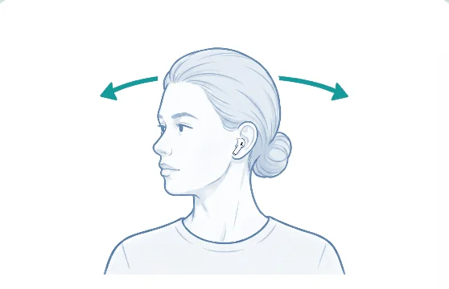
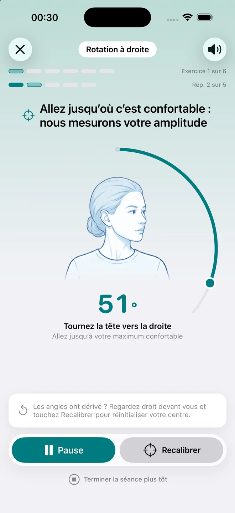
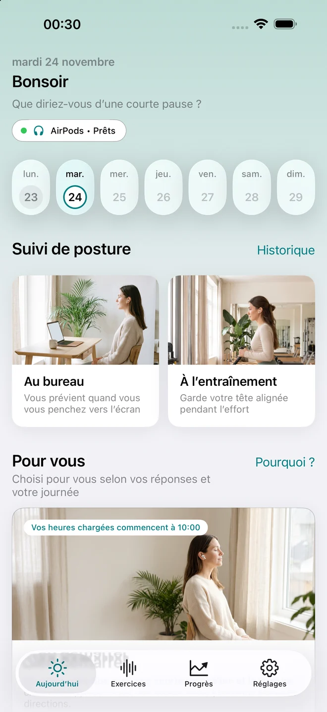
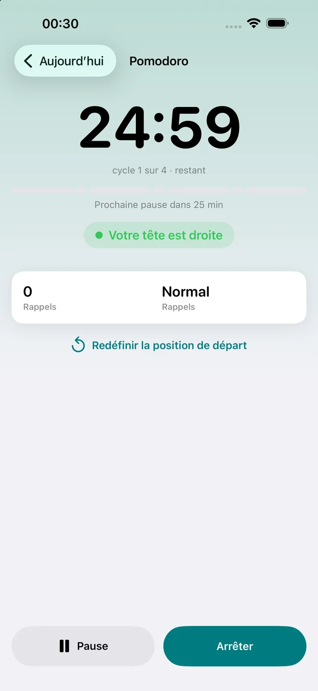

Nuque
Rotation, inclinaison latérale, regard vers le bas et vers le haut, rétraction du menton. Les AirPods mesurent l’angle et comptent les répétitions ; sans eux, Nodly donne le rythme en temps guidé.
De courts exercices pour la nuque, la respiration, les yeux, les mains et les jambes, et du yoga au bureau. Avec vos AirPods, Nodly mesure les mouvements de votre nuque, veille sur votre posture et vous prévient quand votre tête reste baissée trop longtemps.
Télécharger dans l’App StorePour iPhone et iPad · Avec des AirPods compatibles, ou sans

Pas seulement la nuque

Rotation, inclinaison latérale, regard vers le bas et vers le haut, rétraction du menton. Les AirPods mesurent l’angle et comptent les répétitions ; sans eux, Nodly donne le rythme en temps guidé.

Expiration longue, respiration carrée et respiration équilibrée, pendant 1, 2 ou 3 minutes, guidées par un dessin et une légère vibration.

Une pause de deux minutes loin de l’écran : regardez au loin, clignez lentement, puis reposez-vous les yeux fermés.

Étirements et cercles des poignets, ouvrir et fermer le poing, pour les journées passées au clavier et à la souris.

Élévations des talons et des orteils, extensions du genou et marche assise, sans quitter votre chaise.

Chat-vache, flexion latérale et torsion assis, et des mouvements d’épaules pour se détendre entre deux réunions.
Seul le suivi de la nuque utilise les AirPods. Tout le reste fonctionne sans.
Mesuré avec vos AirPods
Les capteurs de mouvement de vos AirPods suivent l’angle de votre tête. Lorsque vous atteignez la zone cible, Nodly vous prévient par un son et une vibration et compte la répétition pour vous. Les objectifs s’adaptent à votre propre amplitude.
Nodly utilise les capteurs de mouvement de vos AirPods. Ni caméra, ni appareil supplémentaire.
Regardez droit devant vous et restez immobile quelques secondes. Nodly prend cette position comme 0°.
Lorsque vous atteignez la zone cible, Nodly vous prévient par un son et une vibration et compte la répétition pour vous.
0°
Droite
Faites glisser vers la droite jusqu’à la zone verte, puis revenez au centre.
Répétitions: 0


Suivi de posture
Suit votre tête pendant que vous travaillez, de 30 minutes à 2 heures, ou en cycles Pomodoro de 25 minutes de travail et 5 minutes de pause.
Pendant les exercices debout, il vous prévient en quelques secondes si votre tête s’abaisse. Pour les exercices allongés, il suffit de le mettre en pause.
Verrouillez votre iPhone et continuez à travailler. Le temps restant s’affiche sur l’écran verrouillé, d’où vous pouvez aussi mettre en pause ou arrêter.
Avec Siri, depuis le centre de contrôle ou avec une automatisation de concentration dans Raccourcis.
« Démarrer le Suivi de posture dans Nodly »
Routines
Commencez par une routine toute prête, comme Bien démarrer ou Pause écran, ou choisissez des exercices dans la bibliothèque et placez-les dans votre propre ordre. Pour vous, sur l’écran Aujourd’hui, vous propose une routine adaptée à votre journée et à vos heures les plus chargées.
Progrès
Votre série, votre semaine et la répartition de votre temps entre nuque, respiration, yeux, mains et jambes, en un coup d’œil. Et plus vous pratiquez, plus un petit bureau en 3D se range tout seul.
Les détails
Votre historique et vos routines se synchronisent entre votre iPhone et votre iPad via votre propre iCloud.
Les exercices pour la nuque peuvent se faire en temps guidé. Les autres exercices n’ont jamais besoin d’AirPods.
Un rappel quotidien, des pauses au bureau pendant vos heures chargées et un résumé hebdomadaire, tous facultatifs.
Le guidage vocal, les sons et le retour haptique vous accompagnent, pour que vos yeux puissent quitter l’écran.
Grandes tailles de texte, VoiceOver et Réduire les animations, sur iPhone et iPad.
Français, anglais, turc, allemand, espagnol, italien, portugais, néerlandais, russe, japonais, coréen et chinois (simplifié et traditionnel).
Confidentialité et confiance
Les données de mouvement sont traitées sur votre iPhone et les données brutes ne sont jamais enregistrées. Aucun compte nécessaire.
Les mouvements doivent rester lents et confortables. Si quelque chose ne va pas, arrêtez immédiatement. Nodly ne vous pousse jamais.
Nodly est une app de bien-être ; elle ne diagnostique ni ne traite aucune affection. Si vous avez un problème de nuque, consultez un professionnel de santé avant de commencer.
Mentions légales
Aucun compte, et vos données de mouvement ne quittent pas votre appareil. Nous ne recueillons de statistiques d’utilisation anonymes qu’avec votre accord. Ni publicité, ni pistage, ni vente de données.
Lire le texte completNodly est proposé par abonnement mensuel ou annuel, avec 7 jours d’essai gratuit pour les utilisateurs éligibles. Vous pouvez résilier à tout moment dans les réglages de votre compte App Store.
Lire le texte completBougez lentement et uniquement dans une amplitude confortable. Arrêtez immédiatement en cas de douleur, de vertige ou d’engourdissement.
Lire le texte completSur l’App Store, pour iPhone et iPad.
Télécharger dans l’App Store